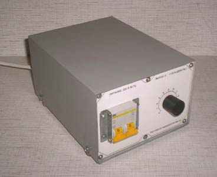
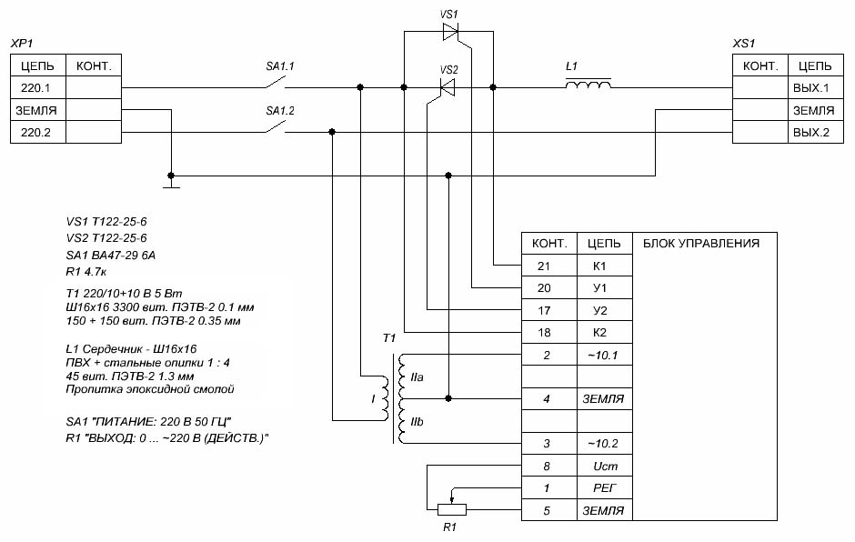
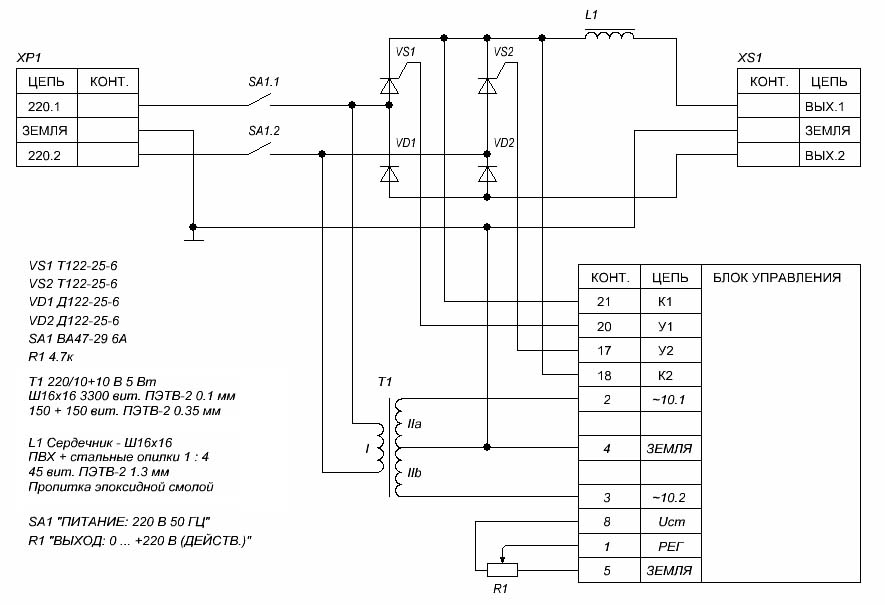
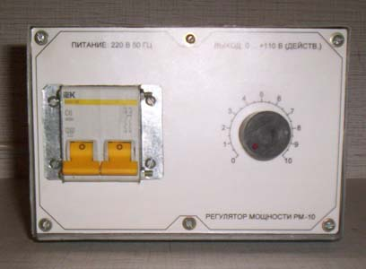
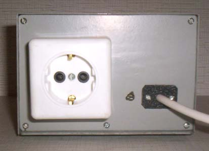

Однофазный тринисторный регулятор мощности в активно-индуктивной нагрузке

Назначение
Однофазный тринисторный регулятор мощности предназначен для плавной регулировки от нуля до максимального значения поступающей от сети переменного тока мощности в различных типах нагрузок (активных, индуктивных, активно-индуктивных). В качестве нагрузок могут применяться различные нагревательные [1, 2] и осветительные приборы, электропривод, электромагниты [5], катушки индуктивности [3], устройства для размагничивания стальных изделий [4].
Технические данные
Конструкция
Электрические принципиальные схемы различных модификаций регулятора мощности показаны на рис. 1 - 3. В зависимости от характера нагрузки и требуемых параметров питающего напряжения может использоваться либо схема с переменным выходным напряжением (рис. 1), либо схема с однополупериодным выпрямлением (рис. 2), либо схема с двухполупериодным выпрямлением (рис. 3). Регулятор мощности подключается к сети переменного тока через автомат защиты SA1 с номинальным током до 16 А (в зависимости от требуемого тока нагрузки). Управление тринисторами осуществляется фазовым способом с помощью блока управления. Конструкция блока управления одна и та же для всех модификаций регулятора мощности. Для питания блока управления используется понижающий сетевой трансформатор T1. Потенциометр R1 служит для регулировки величины выходного напряжения. Дроссель L1 выполняет роль фильтра нижних частот, а также ограничивает скорость возрастания тока через тринисторы при их включении.

Рис. 1. Схема электрическая принципиальная тринисторного регулятора мощности с переменным выходным напряжением.
Рис. 2. Схема электрическая принципиальная тринисторного регулятора мощности с однополупериодным выпрямлением выходного напряжения.

Рис. 3. Схема электрическая принципиальная тринисторного регулятора мощности с двухполупериодным выпрямлением выходного напряжения.
Все узлы регулятора мощности смонтированы на плоском основании, органы управления и подключения расположены на передней и задней панелях (рис. 4, 5). Сверху прибор закрывается П-образным кожухом.

Рис. 4. Тринисторный регулятор мощности (вид со стороны передней панели).

Рис. 5. Тринисторный регулятор мощности (вид со стороны задней панели).
Ссылки:
19.01.2010
18.02.2010
21.06.2010
06.07.2018
Альтернативные источники
энергии
Компьютеры и
Интернет
Магнитные поля
Механотронные системы
Перспективные
разработки
Электроника и технология